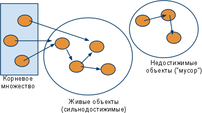
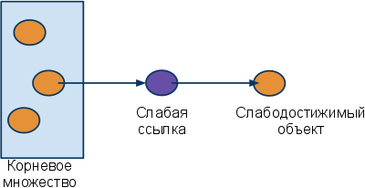
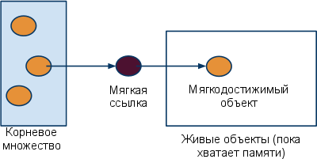

электронный
ресурс по учебной дисциплине 1-58 01 01 - "ИНЖЕНЕРНО-ПСИХОЛОГИЧЕСКОЕ ОБЕСПЕЧЕНИЕ ИНФОРМАЦИОННЫХ ТЕХНОЛОГИЙ".
|
||
| Оглавление | Программа | Теория | Практика| Контроль знаний | Об авторах | ||
|
Оглавление
Лабораторная работа 4 Использование системных функций для работы с виртуальной памятью. 1. Цель работы Изучить особенности функционирования механизма виртуальной памяти и получить практические навыки по его использованию. 2. Учебный материал по лабораторной Память процесса различается на heap (куча) и non-heap (стек) память, и состоит из 5 областей (memory pools, memory spaces): Eden Space (heap) – в этой области выделятся память под все создаваемые из программы объекты. Большая часть объектов живет недолго (итераторы, временные объекты, используемые внутри методов и т.п.), и удаляются при выполнении сборок мусора это области памяти, не перемещаются в другие области памяти. Когда данная область заполняется (т.е. количество выделенной памяти в этой области превышает некоторый заданный процент), GC выполняет быструю (minor collection) сборку мусора. По сравнению с полной сборкой мусора она занимает мало времени, и затрагивает только эту область памяти — очищает от устаревших объектов Eden Space и перемещает выжившие объекты в следующую область. Survivor Space (heap) – сюда перемещаются объекты из предыдущей, после того, как они пережили хотя бы одну сборку мусора. Время от времени долгоживущие объекты из этой области перемещаются в Tenured Space. Tenured (Old) Generation (heap) — Здесь скапливаются долгоживущие объекты (крупные высокоуровневые объекты, синглтоны, менеджеры ресурсов и проч.). Когда заполняется эта область, выполняется полная сборка мусора (full, major collection), которая обрабатывает все созданные JVM объекты. Code Cache (non-heap) — эта область используется JVM, когда включена JIT-компиляция, в ней кешируется скомпилированный платформенно — зависимый код. Сборщик мусора работает следующим образом. Все ссылки, которые находятся на стеке или в статической области памяти образуют корневое множество. Все объекты в «куче», до которых можно добраться по ссылкам из корневого множества, называются живыми. Объекты, до которых добраться нельзя — мертвыми. Во время сборки мусора мертвые объекты удаляются.  Те ссылки, которые показаны на этой картинке — обычные. Они образуются в момент присваивания объекта некоторой переменной: MyClass a = new MyClass(); Такие ссылки ещё называются сильными (strong), а объекты, к которым можно составить путь по сильным ссылкам — сильнодостижимыми (strongly reachable). Для некоторых задач такой подход может быть показаться слишком негибким. Иногда имеет смысл сохранить объект, даже если на него осталось ссылок, иногда наоборот — убрать, даже если он достижим из корневого множества, иногда некоторые объекты имеет смысл уничтожать не сразу, а выполнять некоторые действия перед уничтожением? В Java в таких случаях используются классы из пакета Пример 1. Исчезающие ящики. На склад прибыла партия ящиков, и вам нужно присвоить каждому ящику номер. Для этого заведена хеш-табличка, в которой ключи — ссылки на ящики, а значения — их номера. HashMap boxMap = new HashMap(); При поступлении на склад, ящик добавляется в таблицу: boxMap.put(box, boxid); При этом возникает проблема: при отгрузке ящика со склада, память, выделенная для него, не освобождается, поскольку хеш-таблица содержит ссылку на ящик, и виртуальная машина считает его «живым». Необходимо модифицировать хеш-таблицу так, чтобы память освобождалась после отгрузки ящика. Одно из возможных решений: Эта задача — один из вариантов достаточно общей проблемы: есть объект со «средним» временем жизни (т.е. он живет дольше, чем метод, который выделил для него память, но меньше, чем приложение), c этим объектом связаны метаданные, и эта связь хранится в словаре. В итоге, некоторому третьему объекту необходимо в определенный момент почистить словарь от ненужных записей. Если этот третий объект случайно забудет почистить словарь, случится утечка памяти. Было бы хорошо, если бы записи в этом словаре вообще не учитывались при подсчёте достижимости объекта — то есть, если бы сборщик мусора уничтожал объект В Java есть способ добиться такого поведения — использовать шаблонный класс Слабые ссылки создаются примерно так: WeakReference В том случае, если объект  Если при добавлении записи в хеш-табличку объект класса «ящик» обернуть в слабую ссылку, то это решит проблему утечек памяти. Однако это создаст другую проблему: иметь дело с хеш-табличкой, ключ в записи в которой может неожиданно обратиться в Воспользуемся стандартным классом WeakHashMap. Map boxMap.put(box, boxid); Задача 2: OutOfMemoryError Необходимо преобразовать несколько (сотен? тысяч?) картинок. Для этого есть вот такой код: public class PicModifier { private byte[] picData; public synchronized int modifyPicture(String fileName) { int picSize = getPicSize(fileName); if (picData == null || picData.length < picSize) { picdata = new byte[pisSize]; loadPicture(fileName, picSize); } } } Идея предварительно выделить буфер для файла кажется нормальной: выделение памяти всякий раз для каждой новой картинки может несколько замедлить работу приложения. Однако возникает новая проблема: вдруг приложению перестанет хватать памяти? Тогда, наверное, разумно будет пренебречь буфером и вернуть память системе. Необходимо модифицировать код так, чтобы приложение сохраняло буфер, если памяти достаточно и освобождало его, если память в системе заканчивается? Одно из возможных решений Здесь потребуется поведение, обратное поведению слабых ссылок. Необходимо указать сборщику мусора, что определенный тип объектов нужно держать в памяти столько времени, сколько возможно без риска получить Этого можно добиться, используя «мягкие ссылки». Они работают следующим образом: если объект достижим через набор мягких ссылок («мягкодостижим», softly reachable, см. рисунок), то виртуальная машина будет стараться сохранять этот объект в памяти как можно дольше.  Необходимо это обернуть буфер в мягкую ссылку. private SoftReference Таким образом, мягкие ссылки обеспечивают нечто вроде кэширования. Но это, конечно же, не настоящее кэширование. Если Вашему приложению действительно нужен полноценный кэш, то одних только мягких ссылок мало, нужна реализация кэширующих стратегий, по возможности независимых от количества свободной памяти. Поэтому мягкие ссылки иногда называют «кэшированием для бедных». 3. Порядок выполнения работы 1. Ознакомиться с учебным материалом 2. В ide Eclipse создать проект. 3. Создать приложение с большим количеством тяжелых объектов и оптимизировать работу с ними. 4. Продемонстрировать результат работы преподавателю. 5. Согласовать с преподавателем содержание отчёта и подготовить его. 4. Контрольные вопросы 1. Из каких областей состоит память процесса? 2. Что такое слабая ссылка? 3. Что такое мягкая ссылка?
|
| (С) БГУИР |